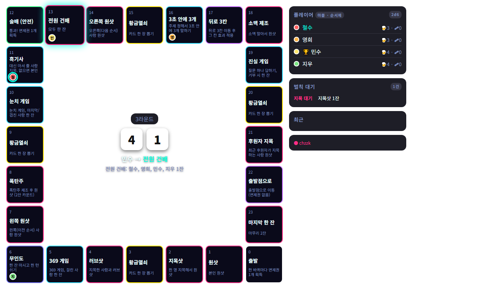
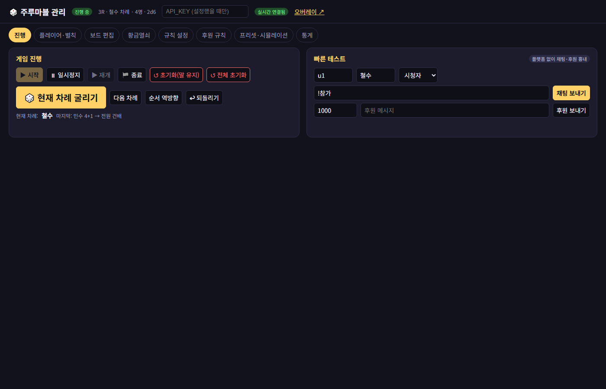

치지직 · 씨미 · SOOP 방송에서 시청자와 함께 하는 주루마블 보드게임 도구
스트리머가 OBS에 게임판 오버레이를 띄우고, 시청자는 채팅으로 참가해 주사위를 굴립니다. 후원이 오면 스트리머가 정한 규칙대로 주사위가 굴러가거나 이벤트가 발생합니다. 결과는 채팅으로 되돌려 알립니다.

OBS 오버레이. 시청자 채팅 명령과 후원으로 주사위가 굴러가고 결과가 표시됩니다.

스트리머 관리 페이지. 진행 제어, 규칙·보드 편집, 벌칙 처리를 여기서 합니다.
각 플랫폼에서 스트리머 본인의 동의로 다음 권한만 사용합니다.
채팅 메시지 조회후원 조회채팅 메시지 쓰기 채널·유저 정보 조회방송 여부 확인
방송 스트림키, 방송 설정 변경, 채팅 설정 변경, 이용자 제재 권한은 요청하지 않습니다.